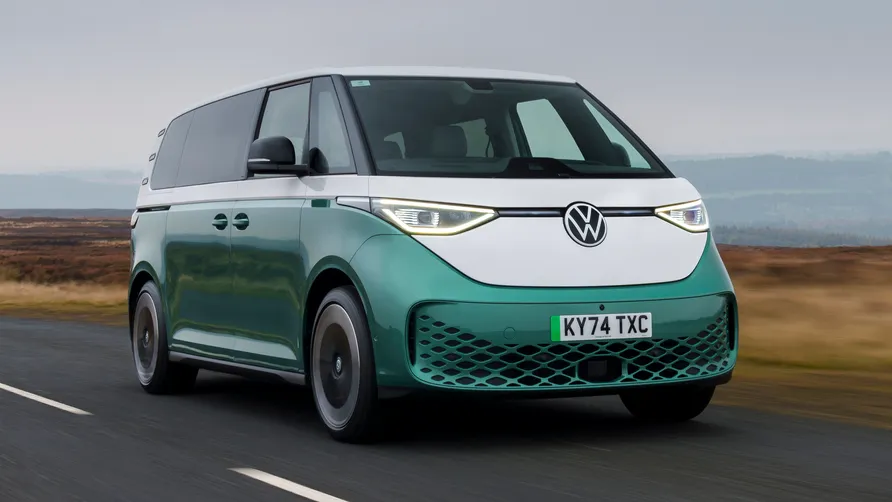

Overview
What is it?
It’s the retro recreation we’ve all been waiting for, VW’s take on a latter day Type 2, a nod to a funkier
electric future and a family wagon you might actually want to drive. It’s the ID. Buzz.
What’s the score then? Full camper van? Seven seats? The promise of regular breakdowns?
No ‘California’ camper van version just yet, in fact word on the street is that’s been pushed to the end of this
decade to allow demand to warm up a bit. Three versions are now available: a five-seat ID. Buzz, an ID. Buzz Cargo
commercial van with up to three seats across the front and a cavern behind, and a stretch Buzz seven-seat (the
green one in the gallery above). Spoiler alert – the seven-seater is categorically the one you want… more on that
in a bit.
So it’s an MPV in a fancy outfit?
That’s about the size of it. But compared to any other family car out there, this is going to look and feel very
different. It makes the humble MPV desirable, for a start. But that is what this is: an MPV. There are a few neat
options though, including a load divider to vertically split the boot and provide a raised floor that lines up
with the folded rear seats. A mattress makes this a semi-Cali, plus there’s a whole host of third-party companies
waiting to sell you all sorts of accessories – even a full camper conversion if you can’t wait for the official
one.
The basics are as follows. It uses the same MEB platform as the ID.3, ID.4 and ID.5, but that’s scaleable, so here
it’s been lengthened, gaining a 2,988mm wheelbase that’s as long as the current Caravelle’s. There are sliding
doors both sides. The powertrain has recently been upgraded so the RWD five-seat version gets a power bump from
204bhp to 282bhp, slashing the 0-60mph time from 10.2 to 7.6 seconds. And you feel it. There’s a clarity to the
throttle response and a surge off the line that does a miraculous job of masking the 2.7-tonne kerbweight.
There’s also a battery bump from 77kWh to 79kWh in the five-seater, extending the range to a claimed 283 miles on
the WLTP test – think more like 170 if you’re loaded and checking out the 99mph top speed, but in reality probably
around 200-230 miles. Unless it’s winter, when you’re likely back at the lower figure.
Don’t go thinking it’ll be a perfect family ski-tripper. You’ll be visiting every aire in France. And besides,
there’ll be no snow when you get there anyway. A 5-80 per cent charge takes 35 minutes (assuming you can find a
170kW charger). However the new, stretched seven-seat version does improve matters. More wheelbase means a bigger
86kWh battery and up to 291 miles of range.
If going fast in something with the aerodynamic profile of a hay bale is your thing, there’s even a GTX version.
Available exclusively in 4WD, with a motor on each axle for a total of 335bhp and 413lb ft of torque. The 0-62mph
drops to 6.1 seconds, the price leaps up to almost £70k, but you do get a towing capacity of 1,800kg versus
1,000kg for the standard Buzz.

Maecenas lacinia felis nec placerat sollicitudin. Quisque placerat dolor at scelerisque
imperdiet. Phasellus
tristique felis dolor.
Maecenas elementum in risus sed condimentum. Duis convallis ante ac tempus maximus. Fusce
malesuada sed velit ut dictum. Morbi faucibus vitae orci at euismod. Integer auctor augue in
erat vehicula,
quis fermentum ex finibus.
Mauris pretium elit a dui pulvinar, in ornare sapien euismod. Nullam interdum nisl ante, id
feugiat
quam euismod commodo. Sed ultrices lectus ut iaculis rhoncus. Aenean non dignissim justo, at
fermentum
turpis. Sed molestie, ligula ut molestie ultrices, tellus ligula viverra neque, malesuada
consectetur diam
sapien volutpat risus.
Quisque eget tortor lobortis, facilisis metus eu,
elementum est. Nunc sit amet erat quis ex convallis suscipit.
ur ridiculus mus.